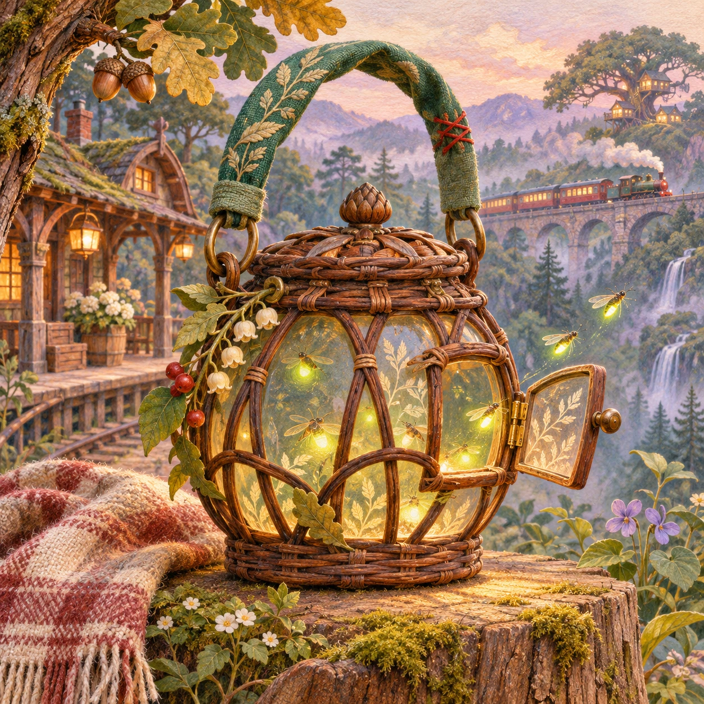

Вещь с историей
Фонарь свободных светляков
Плетёный фонарь с тёплым зелёным светом и маленькой открывающейся дверцей.
Освещает тихую сцену и помогает рассмотреть детали. Светляки могут улететь и вернуться; они не обязаны выполнять команды.